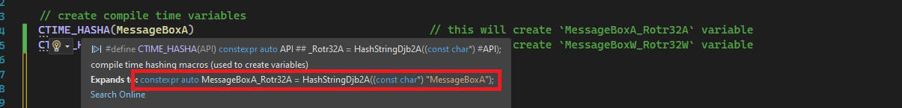
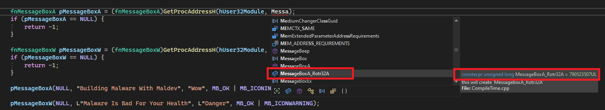
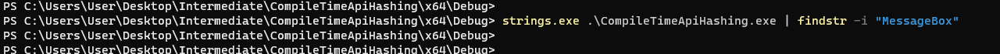
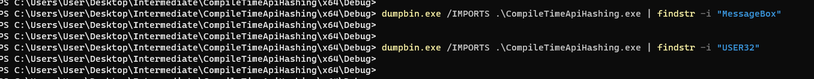
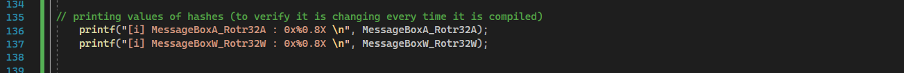
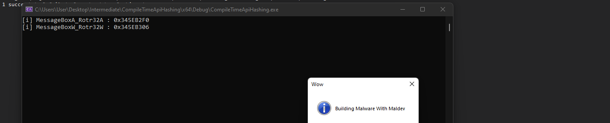
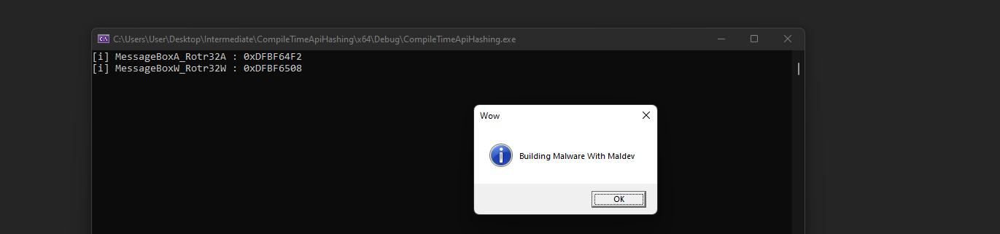

Introduction
In the previous API Hashing module, the hashes of the functions and modules were generated before adding them to the code. Unfortunately, that can be highly time-consuming and can be avoided by using Compile Time API Hashing.
Furthermore, in the previous module hashes were hard coded which can allow security solutions to use them as IoC, if they are not updated in each implementation. With compile time API hashing, however, dynamic hashes are generated every time the binary is compiled.
Caveat
This method only works with C++ projects due to the use of the constexpr keyword. The constexpr operator in C++ is used to indicate that a function or variable can be evaluated at compile time. In addition, the constexpr operator on functions and variables improves the performance of an application by allowing the compiler to perform certain calculations at compile time rather than at runtime.
Compile Time Hashing Walkthrough
The sections below walk through the steps required to implement compile time hashing.
Create Compile Time Functions
The first step is to convert the hashing functions that will be used to become compile time functions using the constexpr operator. In this case, the Dbj2 hashing algorithm will be modified to use the constexpr operator.
#define SEED 5// Compile time Djb2 hashing function (WIDE)
constexpr DWORD HashStringDjb2W(const wchar_t* String) {
ULONG Hash = (ULONG)g_KEY;
INT c = 0;
while ((c = *String++)) {
Hash = ((Hash << SEED) + Hash) + c;
}
return Hash;
}
// Compile time Djb2 hashing function (ASCII)
constexpr DWORD HashStringDjb2A(const char* String) {
ULONG Hash = (ULONG)g_KEY;
INT c = 0;
while ((c = *String++)) {
Hash = ((Hash << SEED) + Hash) + c;
}
return Hash;
}The undefined variable, g_KEY, is used as the initial hash in both functions. g_KEY is a global constexpr variable and is randomly generated by a function named RandomCompileTimeSeed (explained below), on each compilation of the binary.
Generating a Random Seed Value
RandomCompileTimeSeed is used to generate a random seed value based on the current time. It does this by extracting the digits from the TIME macro, which is a predefined macro in C++ that expands to the current time in the HH:MM:SS format. Then, the RandomCompileTimeSeed function multiplies each digit by a different random constant and adds them all together to produce a final seed value.
// Generate a random key at compile time which is used as the initial hash
constexpr int RandomCompileTimeSeed(void)
{
return '0' * -40271 +
__TIME__[7] * 1 +
__TIME__[6] * 10 +
__TIME__[4] * 60 +
__TIME__[3] * 600 +
__TIME__[1] * 3600 +
__TIME__[0] * 36000;
};
// The compile time random seed
constexpr auto g_KEY = RandomCompileTimeSeed() % 0xFF;Creating Macros
Next, define two macros, RTIME_HASHA and RTIME_HASHW, to be used by the GetProcAddressH function during runtime to compare hashes. The macros should be defined as follows.
#define RTIME_HASHA( API ) HashStringDjb2A((const char*) API) // Calling HashStringDjb2A#define RTIME_HASHW( API ) HashStringDjb2W((const wchar_t*) API) // Calling HashStringDjb2WOnce a random compile time hashing function is established, the next step is to declare compile time hash values in variables. To streamline the process, two macros will be implemented.
#define CTIME_HASHA( API ) constexpr auto API##_Rotr32A = HashStringDjb2A((const char*) #API);#define CTIME_HASHW( API ) constexpr auto API##_Rotr32W = HashStringDjb2W((const wchar_t*) L#API);Stringizing Operator
The # symbol is known as the stringizing operator. It is used to convert a preprocessor macro parameter into a string literal.
For example, if the CTIME_HASHA macro is called with the argument SomeFunction, like HASHA(SomeFunction), the #API expression would be replaced with the string literal "SomeFunction".
Merging Operator
The ## operator is known as the merging operator. It is used to combine two preprocessor macros into a single macro. The ## operator is used to combine the API parameter with the string "_Rotr32A" or "_Rotr32W", respectively, to form the final name of the variable being defined.
For example, if the CTIME_HASHA macro is called with the argument SomeFunction, like HASHA(SomeFunction), the ## operator would combine API with "_Rotr32A" to form the final variable name SomeFunction_Rotr32A.
Macro Expansion Demo
To better understand how the previous macros work, the image below shows an example using the CTIME_HASHA macro to create a hash for MessageBoxA by creating a variable called MessageBoxA_Rotr32A that will hold the compile time hash value.

Compile Time Hashing - Code
After putting all the pieces together, the code will be as shown below.
#include <Windows.h>#include <stdio.h>#include <winternl.h>#define SEED 5// generate a random key (used as initial hash)
constexpr int RandomCompileTimeSeed(void)
{
return '0' * -40271 +
__TIME__[7] * 1 +
__TIME__[6] * 10 +
__TIME__[4] * 60 +
__TIME__[3] * 600 +
__TIME__[1] * 3600 +
__TIME__[0] * 36000;
};
constexpr auto g_KEY = RandomCompileTimeSeed() % 0xFF;
// Compile time Djb2 hashing function (WIDE)
constexpr DWORD HashStringDjb2W(const wchar_t* String) {
ULONG Hash = (ULONG)g_KEY;
INT c = 0;
while ((c = *String++)) {
Hash = ((Hash << SEED) + Hash) + c;
}
return Hash;
}
// Compile time Djb2 hashing function (ASCII)
constexpr DWORD HashStringDjb2A(const char* String) {
ULONG Hash = (ULONG)g_KEY;
INT c = 0;
while ((c = *String++)) {
Hash = ((Hash << SEED) + Hash) + c;
}
return Hash;
}
// runtime hashing macros
#define RTIME_HASHA( API ) HashStringDjb2A((const char*) API)#define RTIME_HASHW( API ) HashStringDjb2W((const wchar_t*) API)// compile time hashing macros (used to create variables)
#define CTIME_HASHA( API ) constexpr auto API##_Rotr32A = HashStringDjb2A((const char*) #API);#define CTIME_HASHW( API ) constexpr auto API##_Rotr32W = HashStringDjb2W((const wchar_t*) L#API);
FARPROC GetProcAddressH(HMODULE hModule, DWORD dwApiNameHash) {
PBYTE pBase = (PBYTE)hModule;
PIMAGE_DOS_HEADER pImgDosHdr = (PIMAGE_DOS_HEADER)pBase;
if (pImgDosHdr->e_magic != IMAGE_DOS_SIGNATURE)
return NULL;
PIMAGE_NT_HEADERS pImgNtHdrs = (PIMAGE_NT_HEADERS)(pBase + pImgDosHdr->e_lfanew);
if (pImgNtHdrs->Signature != IMAGE_NT_SIGNATURE)
return NULL;
IMAGE_OPTIONAL_HEADER ImgOptHdr = pImgNtHdrs->OptionalHeader;
PIMAGE_EXPORT_DIRECTORY pImgExportDir = (PIMAGE_EXPORT_DIRECTORY)(pBase + ImgOptHdr.DataDirectory[IMAGE_DIRECTORY_ENTRY_EXPORT].VirtualAddress);
PDWORD FunctionNameArray = (PDWORD)(pBase + pImgExportDir->AddressOfNames);
PDWORD FunctionAddressArray = (PDWORD)(pBase + pImgExportDir->AddressOfFunctions);
PWORD FunctionOrdinalArray = (PWORD)(pBase + pImgExportDir->AddressOfNameOrdinals);
for (DWORD i = 0; i < pImgExportDir->NumberOfFunctions; i++) {
CHAR* pFunctionName = (CHAR*)(pBase + FunctionNameArray[i]);
PVOID pFunctionAddress = (PVOID)(pBase + FunctionAddressArray[FunctionOrdinalArray[i]]);
if (dwApiNameHash == RTIME_HASHA(pFunctionName)) { // runtime hash value check
return (FARPROC)pFunctionAddress;
}
}
return NULL;
}Demo
This demo calls MessageBoxA and MessageBoxW using compile time API hashing using the MessageBoxA_Rotr32A compile time variable.

Check for IoCs
Use the Sysinternal Strings tool to search for the "MessageBox".

Use the Dumpbin tool to check the IAT for anything related to MessageBox.

Running The Binary
Run the binary and see in fact MessageBox is being used.
Verify Dynamic Hash Value
Print the hash values to the console in order to verify it's being modified every time the code is compiled.


Rebuild the Visual Studio Project, check the hash values again and notice that the hash values are different from the previous run.
